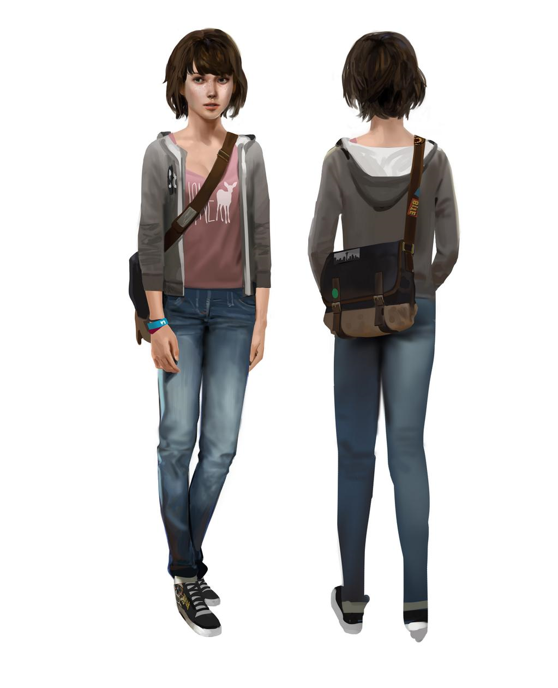

Max Caulfield (Life is Strange 2015)
Dontnod Entertainment
Un des aspects les plus importants d’un jeu est la cohérence rôle-design :
Le design d'un personnage de jeu vidéo a pour objectif d'exprimer son rôle narratif et gameplay. Si ce principe est généralement suivi pour les personnages masculins, on constate que les personnages féminins sont conçus avec un méta-rôle d'attrait sexuel pour le public supposé masculin hétérosexuel. Ainsi, le retrait de ce méta-rôle, et la mise en cohérence qui en découle du design avec le rôle narratif et gameplay du personnage féminin, est la piste la plus évidente d'évitement des stéréotypes objectifiants.
 Un personnage comme Max Caulfield de Life is Strange illustre ce procédé : sa manière de s'habiller n'a rien de sexualisant et évoque une adolescente au caractère calme, et sa morphologie n'exagère aucune partie du corps. Son apparence graphique semble donc entièrement et exclusivement conçue pour évoquer son caractère d'adolescente geek. En outre, Max est un modèle féminin et un avancement dans cette évolution constante.
Max n’est pas un modèle seulement dans sa représentation mais par rapport au type de personnage qu’elle incarne dans ce jeu interactif, elle peut faire ses propres choix et être totalement indépendante d’une tierce personne. Elle peut choisir de son caractère, de sa sexualité, de ses fréquentations et de beaucoup d’autres décisions plus importantes.